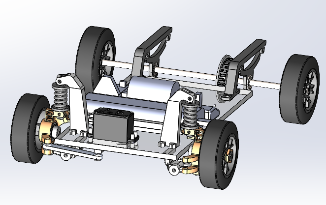

As a mechanical engineer, I have taken several relevant courses with regards to my growth as a mechanical design engineer. My most notable one was ME 338 (Machine Elements), in which we had to design and build an RC Car from scratch, given only some bare tools and an electronics kit.
For our car, we decided to properly implement a real suspension system with 3D printed shocks and a Macpherson-Strut upright in the front and short cantilever supports in the rear. Utilizing this method provided us with a significant amount of traction in the front, preventing any potential for slippage or loss of control during operation. For the race, we were required to complete 3 laps of a track with two 8ft straights and two 180 degree turns with a turn radius of approximately 4ft in under 30 seconds. Our car ended up achieving a time of 26.6 seconds!

Full CAD model of our RC Car, which we designed and built from scratch.
This was made the night before qualifiers. The car was able to achieve speeds of approximately 10 m/s on a straight in this test run, and can easily achieve the desired turn radius of 4 ft for the track turns through utilizing Ackerman steering with an Ackerman angle of 10.9 degrees.